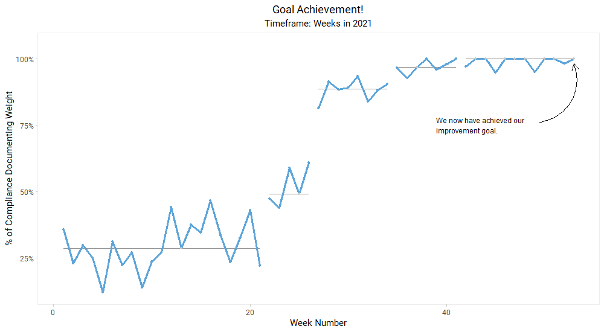

Quality improvement and clinical analytics in prehospital and emergency care.
M.S., NRP · Continuous Quality Improvement Manager & Agency Data Officer, D.C. Fire and EMS Co-Chair, Measure Analysis and Research Committee, National EMS Quality Alliance

Documentation compliance, weekly, 2021. Four sustained shifts, median re-centred at each. Roughly 29% to roughly 99% — without adding a single field to the chart. Every artifact below was built for a decision someone actually had to make.
Does the vulnerability of your neighborhood predict which hospital the ambulance takes you to?
D.C. Fire and EMS is the District's sole 911 transport provider, which gives that question real stakes. I modeled destination across 10,659 adult transports against CDC/ATSDR Social Vulnerability Index percentile rank joined at census tract, controlling for age, sex, race and ethnicity, and testing ALS versus BLS unit type as a moderator. The three receiving hospitals compared offer equivalent trauma, STEMI/ACS, and stroke service lines — so destination differences are harder to attribute to clinical necessity.
Crews were holding patients on stretchers for hours. Did putting an officer inside the ED change that — and what did it buy?
Evaluated with three families of Shewhart charts, using a square-root transformation of time-in-seconds to stabilize variance, with subgroups by agency and by the four hospitals receiving over 70% of transports. A log-linear model then converted the drop-time change into the currency leadership actually budgets in: recovered capacity, expressed as additional 911 responses available for the same committed unit-hours.
January 2025 · EQuIP national airway collaborative
Five factors, three systems, and no appetite for a 96-run experiment.
Instead of testing one variable at a time, an L12(3¹,2⁴) orthogonal array evaluated three video laryngoscope systems alongside one- versus two-person technique, bougie versus rigid stylet, BVM size, and ventilation feedback. Five paramedics each completed 12 randomized intubations on a high-fidelity simulator, with intubation intervals measured instrumentally rather than by stopwatch. Twelve runs where a full factorial would have needed ninety-six — and the hypotheses, including the null ones, were written down first.
Can you move documentation compliance without adding burden to the people documenting?
The chart at the top of this page is the last panel of this series. Read the five in order: baseline, three sequential improvement experiments, then goal achievement. The median is re-centred at each demonstrated shift rather than smoothed across the year, which is the difference between a run chart that shows what happened and one that hides it.
Figures — annotated run charts, cumulative sum charts for cardiac arrest, a t-chart for time between rare events, ridgeline and carpet plots of CPR pause distributions pulled from defibrillator device data, and before-and-after stroke scale distributions. Browse
Presentations — including The State of Cardiac Arrest Performance in the District of Columbia, delivered to the D.C. Resuscitation Collaborative in July 2021, covering system performance from 2016 through 2021. Browse
On the data
No patient data is committed to this repository. Analysis scripts read from local, uncommitted directories. Published figures are aggregate, and hospitals appear under coded identifiers except where already public.